Programmer’s Guide¶
- author
Ryan Wolfslayer
- date
July 29, 2020
Project structure¶
.
├── LICENSE
├── README.md
├── app
│ ├── __init__.py
│ ├── forms.py
│ ├── models.py
│ ├── static
│ ├── templates
│ ├── utility.py
│ └── views.py
├── config.py
├── main.py
├── requirements.txt
├── spec.md
├── tests
│ ├── logs
│ └── test_utility.py
└── todos.md
App¶
Forms¶
The forms are directly tied to the input fields within the templates. The following table should help you link the name of the form with the template name and output.
name |
location(s) |
image |
DOI Form |
|
|
AuthorForm |
|
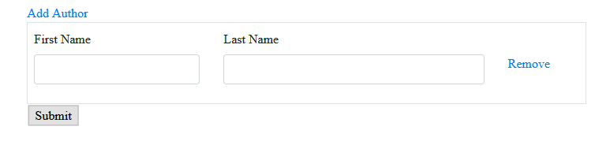 |
NewPublication |
|
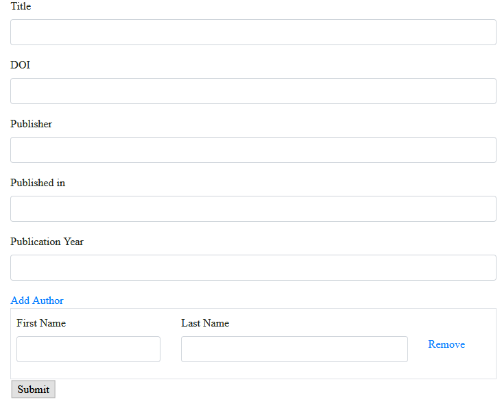 |
UpdatePublication |
|
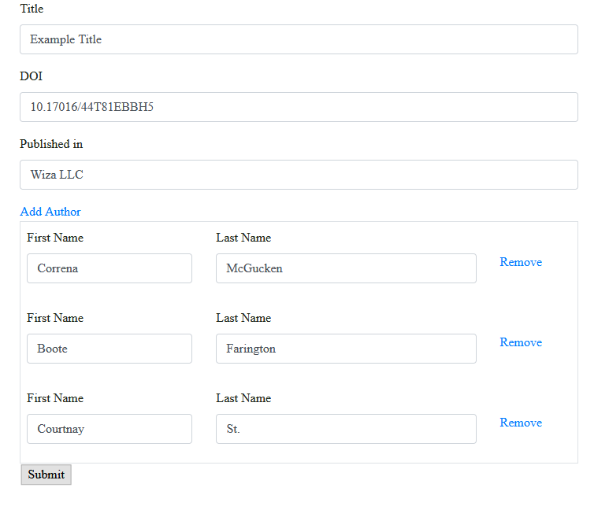 |
UpdatePublicationStatus |
|
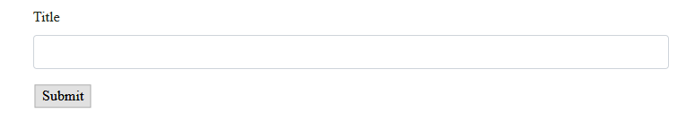 |
-
class
app.forms.AuthorForm(*args, **kwargs)[source]¶ Bases:
wtforms.form.FormForm that inherits from wtforms.Form class. Contains fields for author first_name and last_name
-
class
app.forms.NewPublication(*args, **kwargs)[source]¶ Bases:
flask_wtf.form.FlaskFormContains the form-fields required to add a new publication. The author FieldList allows for up to 30 authors.
Models¶
The models determine how the database is structured. It is imporant to understand how the database is structured, so we can make proper SQL queries.
ER Diagrams
These diagrams show a quick break down of the tables. Each document can have many authors, but, for now, authors can only have one document. The connection between the BeforeDoc and EditDoc model is one-to-one, meaning the BeforeDoc can only have one EditDoc connection and visa versa.
New Publication model
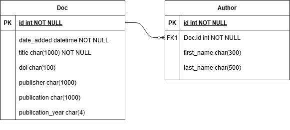Edit Publication model
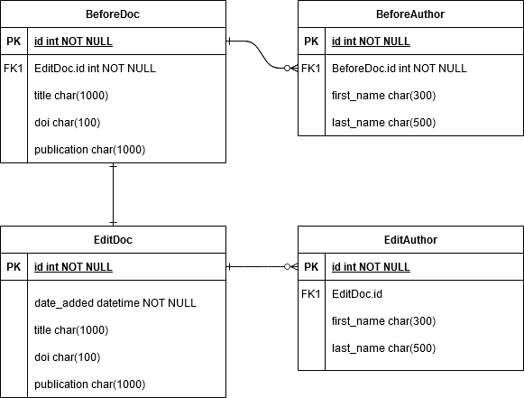models.py
-
class
app.models.Author(**kwargs)[source]¶ Bases:
sqlalchemy.ext.declarative.api.ModelAuthor information associated with Doc model and adding new publication.
-
class
app.models.BeforeAuthor(**kwargs)[source]¶ Bases:
sqlalchemy.ext.declarative.api.ModelAuthors associated with BeforeDoc documents (i.e. documents prior to edits).
- Parameters
-
class
app.models.BeforeDoc(**kwargs)[source]¶ Bases:
sqlalchemy.ext.declarative.api.ModelModel that captures state of a document object’s metadata prior to edits. This will be a useful point of comparison for later work with document metadata. (i.e. What did the user edit?)
- Parameters
id (int) – primary key (auto-generated)
doc_id (int) – foreign key for the EditDoc model, edit_docs.id
title (str) – title of document prior to edits
doi (str) – Digital object identifier (DOI) prior to edits
publication (str) – Entitiy publishing document object prior to edits
edit_doc – Establishes backref connection to EditDoc model
-
class
app.models.Doc(**kwargs)[source]¶ Bases:
sqlalchemy.ext.declarative.api.ModelModel associated with adding a new publication.
- Parameters
id (int) – primary key (auto-generated)
date_added (datetime) – date document added to database (useful for queries; auto-generated)
title (str) – title of new document
doi (str) – Digitial Object Identifier (DOI), should not contain https://doi.org/
publisher (str) – Name of entity publishing new object
publication (str) – Name of entity in which object is published
publication_year (str) – Year entity published (different from date_added)
-
class
app.models.EditAuthor(**kwargs)[source]¶ Bases:
sqlalchemy.ext.declarative.api.ModelAuthors associated with EditDoc model (i.e. authors after user edits)
- Parameters
-
class
app.models.EditDoc(**kwargs)[source]¶ Bases:
sqlalchemy.ext.declarative.api.ModelModel that captures the state of a document after a user submits edits. Changes can later be identified by comparing EditDoc metadata to BeforeDoc metadata.
- Parameters
id (int) – primary key (auto-generated)
date_added (datetime) – date document added to database (useful for queries; auto-generated)
title (str) – title of document after edits
doi (str) – Digital Object Identifier after edits
publication (str) – Name of entity in which document is published after edits
Templates¶
Templates use Jinja to create the HTML views used in the application.
file |
description |
image |
base.html |
This template contains the navigation bar, connects the JS and CSS to the project, and implements the JS script needed to adjust the number of authors per publication when editing records. |
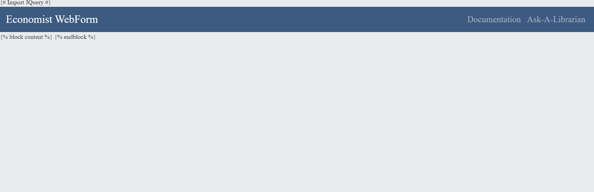 |
welcome_page.html |
Navigation page used to direct users to the new, edit, and forthcoming processes. |
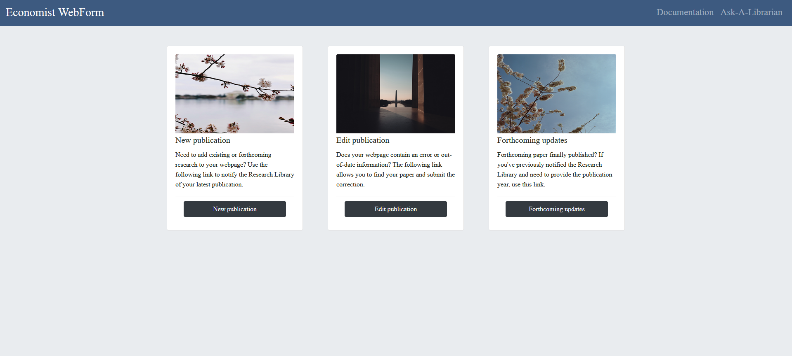 |
newpub.html |
Connects to
|
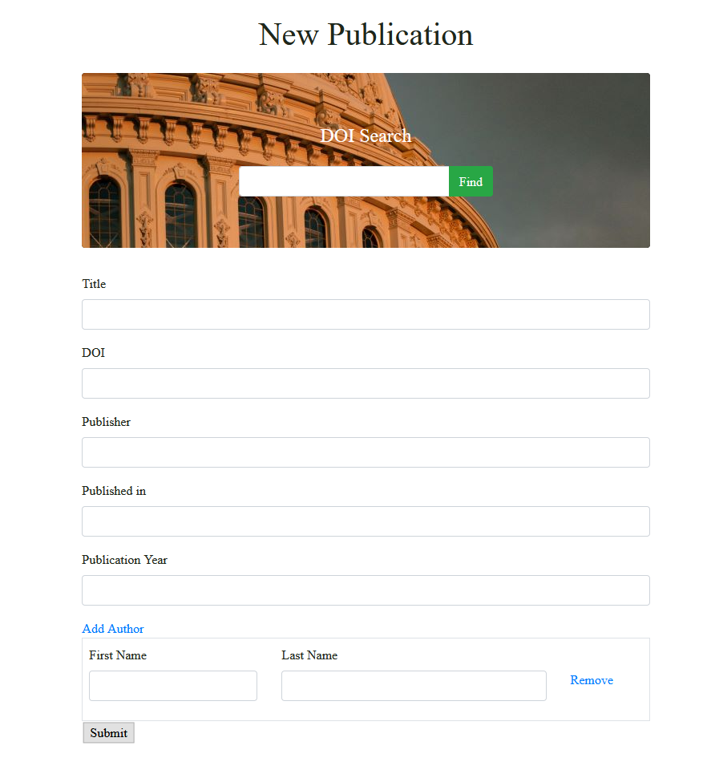 |
editpub.html |
Connects to
|
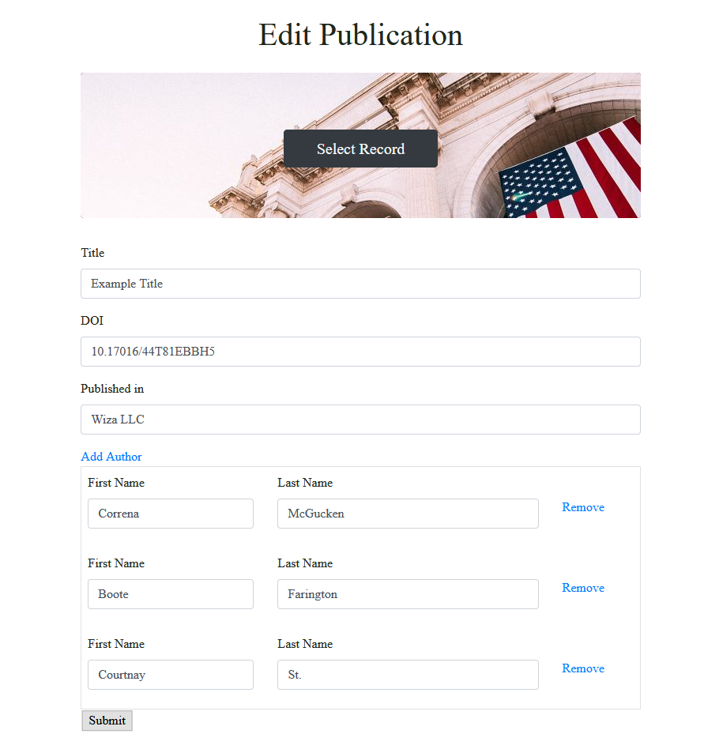 |
updatepub.html |
Connects to
|
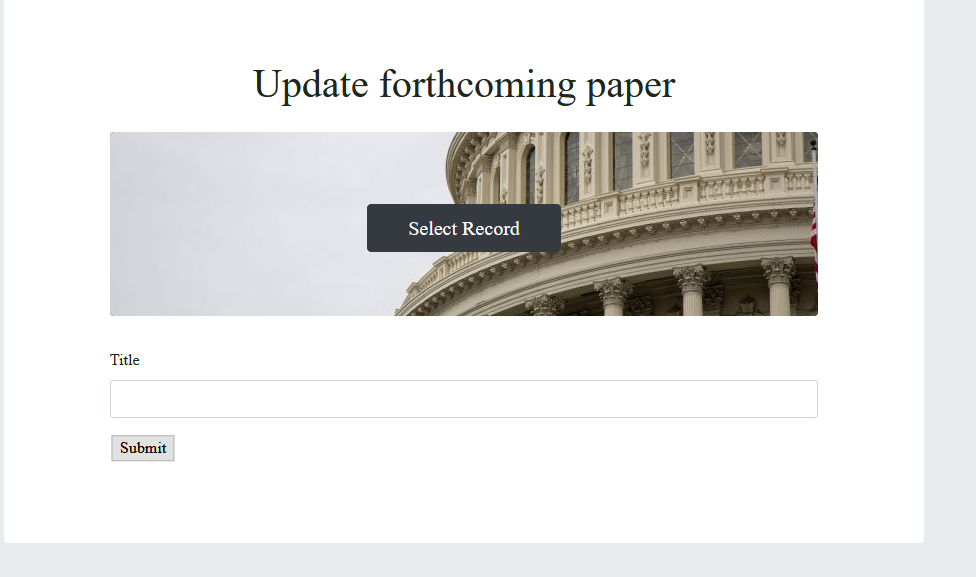 |
__init__.py |
Combines components form the application, and allows for the app to be fully imported into main.py. This file also contains the dash table used to select records for edits. |
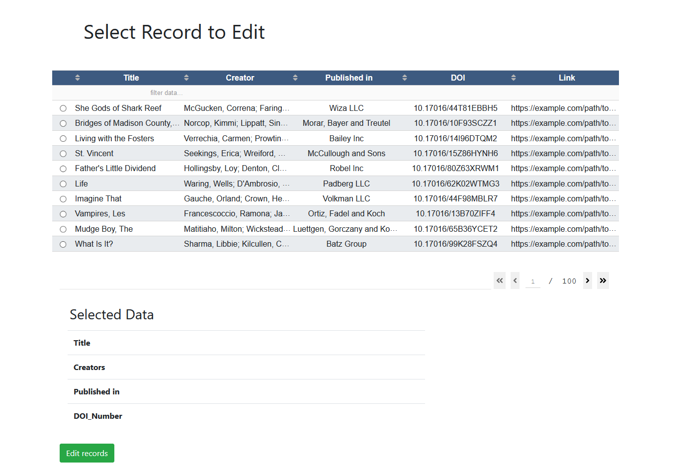 |
success_new.html |
Reads from
|
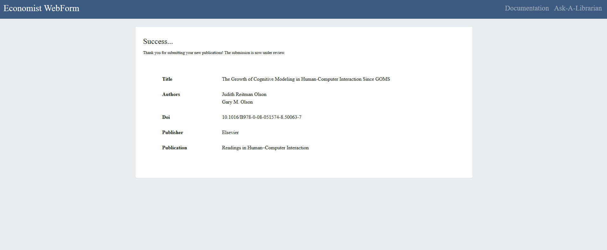 |
success_edit.html |
Reads from
|
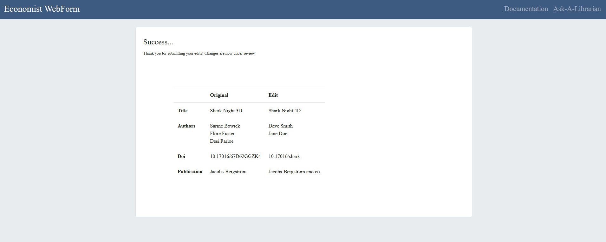 |
success_update.html |
Under construction |
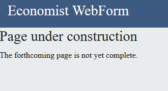 |
Utilities¶
-
class
app.utility.CRef(doi)[source]¶ Bases:
objectLeverages the crossref.restful API to gather metadata requried to submit a new publication to the web form. The crossref schema can be found at https://data.crossref.org/schemas/crossref_query_input2.0.xsd.
This class parses in a way that satisfies the needs of the Economist Webform project. If you need different metadata, modify this class to target different fields.
- Parameters
doi (str) – Digital object identifier (doi); URL like string associated with a publication registered with CrossRef
- Attributes:
- doi (str)
same as param
- res (obj)
response to the crossref.restful API call
- title (str)
title of the document returned in API call
- publisher(str)
name of publisher of document from API call
- journal_name (str)
publication which houses document returned in API call
- year (str)
year returned document was published
Method to find and parse a list of authors returned in crossref.restful API response.
- Attributes:
- author_list (list)
list of authors [‘lastname, firstname’,] from API response
-
app.utility.cdm_api_trans()[source]¶ Pythonic approach to running XSLT transformation. The transformation takes CONTENTdm’s API response and converts the XML into HTML tables, which, in turn, can be converted to a pandas dataframe.
-
app.utility.cdm_pull(query_string=None)[source]¶ Calls CONTENTdm’s API and runs the cdm_api_trans XSLT transformation against te results. The function then converts the HTML tables from cdm_api_trans to a pandas dataframe, and returns the output.
- Parameters
query_string (str) – string that will return CDM API response with desired parameters
Note During the prototype stage of this project, this function will read in dummy data that replicates the CDM API response, instead of calling a live API. Make sure dummydata.xml is located in the static directory.
Views¶
-
app.views.cleartable()[source]¶ Clears null values from the edit_docs database; not intended for public use. For an unknown reason, the database model adds a blank row in-between each submit. To make the database more friendly to developers, this function does some cleanup.
- Returns:
./templates/welcome_page.html
-
app.views.dash_app()[source]¶ This dash app presents a Dash table of fields that a user can select. Once selected, the data is stored into the flask.session and used in the editpub process.
-
app.views.editpub()[source]¶ Edit Publication page. If the users selects a table row from dash_app template, this view saves the stored flask session data into the BeforeDoc database model. Any changes submitted to this view are then stored in the EditDoc model.
- Returns:
./templates/editpub.html
./templates/success_edit.html (upon submit)
-
app.views.home()[source]¶ Welcome page that provides options to navigate to new, edit, or forthcoming functionality.
- Returns:
./templates/welcome_page.html